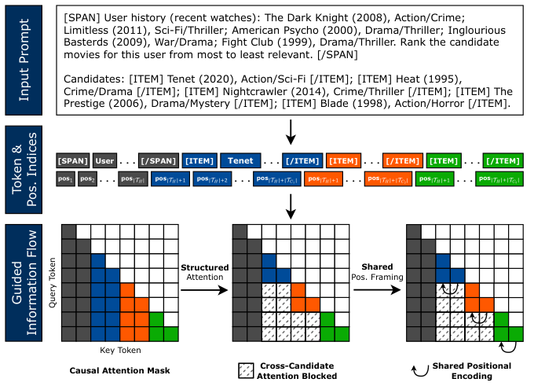
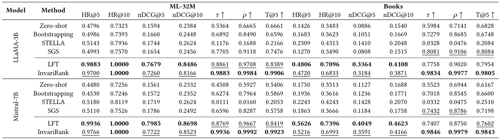
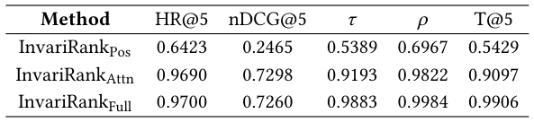

One Pass, Any Order: Position-Invariant Listwise Reranking for LLM-Based Recommendation (一次前向，任意顺序：面向 LLM 推荐的排列不变列表级重排)
- 会议/期刊: SIGIR 2026 (49th International ACM SIGIR Conference, Melbourne, VIC, Australia)
- 推荐链路定位: 重排 (Re-ranking) — 两阶段召回-重排流水线中的列表级重排器
- 研究方向: 多任务学习与列表级重排 / 大语言模型推荐 (LLM4Rec)
- 论文原文: https://arxiv.org/abs/2604.27599v1
- 开源代码: https://github.com/ejbito/InvariRank
TL;DR (核心速览)
针对 decoder-only LLM 列表重排中"候选集合是集合、但模型按序列计算"导致的顺序敏感问题，InvariRank 从架构层面切断顺序依赖通道：用结构化分段注意力掩码阻断候选间注意力泄漏，用共享位置框架在 RoPE 下对齐各候选相对用户上下文的位置偏移，配合 LambdaRank 列表级损失，单次前向即可打分全部候选。在 ML-32M 与 Amazon Books 上（K=25，LLaMA-3B / Mistral-7B），nDCG@10 与最强微调基线 LFT 基本持平（0.8166 vs. 0.8486），而 Kendall τ 从 0.8861 提升至 0.9883、Spearman ρ 从 0.9708 提升至 0.9984，且无需排列集成或不变性正则。
Background & Motivation (背景与动机)
- 领域背景与主流范式: LLM 作为两阶段推荐流水线中的重排器已成主流——第一阶段检索器（如 LightGCN）产出固定候选集，第二阶段将用户历史、物品描述与任务指令拼进同一 prompt，由 LLM 在一次前向中对全部候选做列表级 (listwise) 联合打分。相比 pointwise / pairwise，listwise 能利用全局上下文，是 LLM 重排最自然的范式。
- 现有方法局限 (Limitations of Prior Work):
- 推理时方法（排列集成 Bootstrapping、贪心 SGS）通过聚合多个候选顺序提升稳定性，但需多次模型调用，推理成本成倍增长，且只是"平均掉"而非"消除"顺序依赖。
- 后处理校准（STELLA 学习位置偏置矩阵）在打分已被污染之后才修正分数，无法保证诱导出的偏好序一致。
- 训练时正则（排列一致性损失、位置感知微调、ALRO 式生成式不变性目标）惩罚跨排列分歧，但模型在计算过程中仍可访问顺序信息，顺序依赖的根源未被移除。
- 核心挑战 (Key Challenge): 推荐候选构成集合，而 decoder-only LLM 按序列计算。因果注意力让候选 token 互相"看见"，RoPE 让候选与共享上下文的相对位置偏移随排列漂移——二者共同把预测相关性耦合到候选的序列化位置而非仅内容与用户上下文。简单加深网络或加对比/正则损失无法解决，因为信息通道本身仍在。
- 核心洞察与切入点 (Key Insight): 作者将顺序敏感性归因于两个具体架构来源：(i) 跨候选注意力泄漏 (cross-candidate attention leakage)；(ii) RoPE 下的偏移漂移 (offset drift)。既然根源在计算图，就应在架构层面移除顺序依赖通道，使排列不变性成为模型计算的性质，而非推理集成或辅助损失的效果。
Problem Formulation & Method (问题定义与方法架构)
1. 符号定义与输入表征 (Notations & Input Representations)
- 候选集 \(\mathcal{C}=\{c_1,\dots,c_N\}\)，\(N=K=25\)；\(\pi\) 为候选索引上的一个排列。
- 用户指令 \(\mathcal{I}\)、用户历史 \(\mathcal{H}\)（最近 20 条交互）、候选集 \(\mathcal{C}\)。
- 单一输入序列构造为： $\(q=\text{concat}\Big(\underbrace{\texttt{[SPAN]}\mathcal{I}\,\|\,\mathcal{H}\texttt{[/SPAN]}}_{\text{shared context}},\ \underbrace{\texttt{[ITEM]}c_1\texttt{[/ITEM]}\cdots\texttt{[ITEM]}c_N\texttt{[/ITEM]}}_{\text{candidate set}}\Big)\)$
- 记 \(\mathcal{T}_H\) 为共享上下文 token 索引集，\(\mathcal{T}_i\) 为候选 \(c_i\) 的
[ITEM]span token 索引集。 - 输出：每个候选一个标量分 \(s_i\)，取该候选
[ITEM]span 上token 级对数概率的均值；按 \(s_i\) 降序得最终排名。
2. 整体流水线 (Overall Architecture)
数据流：LightGCN 一阶段召回构造 \(K=25\) 候选列表 → 拼接共享上下文与候选集为单序列 → 结构化分段注意力掩码（阻断候选间注意力）+ 共享位置框架（对齐 RoPE 偏移）→ 单次前向得到各候选 span 平均对数概率分 → 排序输出。训练阶段用 LambdaRank 式 pairwise logistic 损失做列表级监督。
flowchart TD
A["输入层: 指令 I + 用户历史 H (20条) + 候选集 C (K=25)"] --> B["结构化分段注意力掩码 M = M_causal ∧ M_seg<br/>阻断候选间注意力泄漏"]
B --> C["共享位置框架: 各候选 span 统一分配 |T_H|+1 ... |T_H|+|T_i|<br/>对齐 RoPE 相对偏移"]
C --> D["LLM 单次前向 (LLaMA-3B / Mistral-7B + LoRA)<br/>各候选 span 平均 token 对数概率打分"]
D --> E["LambdaRank 列表级损失训练<br/>推理: 按 s_i 降序输出排名"]
3. 核心模块设计与数学原理 (Key Designs & Formulations)
(1) 排列等变的目标定义。 理想重排器应满足排列等变： $\(s_{\pi(i)}(\mathcal{H},\pi(\mathcal{C}))=s_i(\mathcal{H},\mathcal{C}),\quad \forall \pi\)$ 即重排输入候选不改变每个物品的得分，诱导排名在排列下一致。而标准 decoder-only LLM 的实际打分为 $\(s_i=f_\theta(\mathcal{H},c_i,c_{<i},p_i),\)$ 其中 \(c_{<i}\) 为前序候选、\(p_i\) 为序列化位置——这正是顺序依赖的两个入口。
(2) 结构化注意力掩码（候选隔离）。 定义分段掩码 $\(M^{\text{seg}}_{t,u}=\mathbb{I}\Big[(t,u)\in(\mathcal{T}_H\times\mathcal{T}_H)\cup\bigcup_{i=1}^{N}(\mathcal{T}_i\times\mathcal{T}_i)\cup\bigcup_{i=1}^{N}(\mathcal{T}_i\times\mathcal{T}_H)\Big],\)$ 并与因果掩码取交 \(M=M^{\text{causal}}\wedge M^{\text{seg}}\)。效果：每个候选只能关注共享上下文与自身，不能关注其他候选，从而 $\(s_i=g_\theta(\mathcal{H},c_i),\)$ 彻底移除对 \(c_{<i}\) 的依赖。物理直觉：把"列表联合打分"退化为"在共享上下文条件下的条件独立打分"，候选间不再有顺序相关的干扰通道。
(3) 共享位置框架（消除 RoPE 偏移漂移）。 仅隔离注意力还不够——位置编码仍会引入顺序依赖。作者令 \(\mathcal{T}_H\) 中 token 取位置 \(1,\dots,|\mathcal{T}_H|\)，而每个候选段 \(\mathcal{T}_i\) 都独立地分配 \(|\mathcal{T}_H|+1,\dots,|\mathcal{T}_H|+|\mathcal{T}_i|\)，与 \(i\) 及排列无关。于是对任意排列 \(\pi\)： $\(p_{\pi(u)}-p_{\pi(t)}=p(u)-p(t),\quad \forall t\in\mathcal{T}_H,\ u\in\mathcal{T}_i,\)$ 即候选与上下文之间的相对位置偏移被严格保持，每个候选都在与上下文完全相同的位置关系下被评估。这是 RoPE 只依赖相对位置的特性所允许的"共享坐标系"技巧。
(4) 列表级训练目标。 尽管前向时候选表征条件独立，训练仍是列表级：对每个满足 \(y_i>y_j\) 的偏好对 \((i,j)\)，采用 LambdaRank 式 pairwise logistic 损失 $\(\ell_{ij}=|\Delta\text{nDCG}_{ij}|\cdot\log\Big(1+\exp\big(-\sigma(s_i-s_j)\big)\Big),\)$ 最终损失为所有偏好对的平均。\(\Delta\text{nDCG}_{ij}\) 为交换两候选引起的 nDCG 变化，作为配对权重。这样候选分数通过损失耦合，保留列表级监督，而排列不变性由模型计算而非目标函数保证。
4. 训练目标、负采样与推理复杂度 (Optimization, Negative Sampling & Complexity)
- 损失函数: 上述 LambdaRank 式加权 pairwise logistic 损失（原文未显式给出 \(\sigma\) 取值与 \(\Delta\)nDCG 的具体归一化细节，属原文未报告项）。
- 训练负采样策略: 无显式负采样。候选列表由 LightGCN 检索池构造：确保未来正样本在列时纳入，其余槽位用检索到的或采样的未交互物品填充，未交互物品相关性标为 0。属"检索候选 + 采样填充"的构造式负例，而非训练期 Uniform/In-batch 负采样。
- 时间与空间复杂度:
- 离线：LightGCN 一阶段训练 + 候选构造；LLM 侧用 LoRA (rank 16, \(\alpha=32\)) 微调，500 优化步、batch size 16（梯度累积）、学习率 \(5\times10^{-5}\)、AdamW + 5% warmup、最大序列长度 4096。
- 在线推理：单次前向为全部 \(N\) 个候选打分，无需 Beam Search、无需排列集成、无需多次调用——这是相对 Bootstrapping / SGS 的核心效率优势（后者需多次前向）。原文未报告具体 ms/request 延迟与峰值显存数值。
Experimental Setup & Evaluation Protocol (实验设置与评估协议)
- 数据集统计与预处理: 原文仅给出两数据集名称与划分，未报告 #Users / #Items / #Interactions / 稀疏度等统计量（下表按原文可得信息填写，缺失项标注"原文未报告"）：
| 数据集 (Dataset) | 用户数 (#Users) | 物品数 (#Items) | 交互数 (#Interactions) | 稀疏度/密度 (Sparsity) | 模态/辅助特征说明 |
|---|---|---|---|---|---|
| MovieLens-32M | 原文未报告 | 原文未报告 | 原文未报告 | 原文未报告 | 时间戳显式反馈；物品含标题/类型文本 |
| Amazon Books | 原文未报告 | 原文未报告 | 原文未报告 | 原文未报告 | 时间戳显式反馈；物品含标题/类别文本 |
- 数据划分方式 (Splitting Strategy): 按用户时间戳排序后切分为 70%/10%/20% 训练/验证/测试（按比例 + 时间序的混合切分）。每个 query 用最近 20 条历史，相关性由未来交互导出，作者明确声明以此避免时间泄漏。正样本定义为评分 \(\ge 4\) 的隐式正例（用于训练一阶段 LightGCN）。
- 排名评测协议 (Ranking Protocol): 固定候选列表 \(K=25\)，所有方法重排同一候选集，未交互物品相关性记 0。属固定小候选集的列表级重排评测，非全库 Full-Ranking，也非 1:99 采样排序；候选池由 LightGCN 检索 + 采样填充构成。
- 评价指标与显著性检验: 效果指标 HR@\(\{5,10\}\)、nDCG@\(\{5,10\}\)；稳健性指标 Kendall \(\tau\)、Spearman \(\rho\)、top-\(k\) 一致性 T@5。每个候选集在多个排列下评测并取平均。原文未报告多随机种子方差或配对显著性检验（\(t\)-test / Wilcoxon / Bootstrap）。
Key Experimental Results (核心实验结果)
1. 主实验对比 (Main Results)

下表摘取 LLaMA-3B 与 Mistral-7B 在 ML-32M 上的关键数值（Books 趋势一致）：
| 数据集 | 指标 | 推理时/后处理最强基线 (SGS / STELLA) | 微调最强基线 LFT | 本文方法 InvariRank | 相对 LFT 变化 |
|---|---|---|---|---|---|
| ML-32M (LLaMA-3B) | nDCG@10 | 0.2624 (STELLA) | 0.8486 | 0.8166 | −3.77% |
| ML-32M (LLaMA-3B) | Kendall τ | 0.7705 (SGS) | 0.8861 | 0.9883 | +11.53% |
| ML-32M (LLaMA-3B) | Spearman ρ | 0.9118 (SGS) | 0.9708 | 0.9984 | +2.84% |
| ML-32M (LLaMA-3B) | T@5 | 0.7476 (SGS) | 0.8389 | 0.9906 | +18.08% |
| ML-32M (Mistral-7B) | nDCG@10 | 0.2624 (STELLA) | 0.8698 | 0.8523 | −2.01% |
| ML-32M (Mistral-7B) | Kendall τ | 0.6596 (SGS) | 0.8769 | 0.9936 | +13.31% |
| Books (LLaMA-3B) | nDCG@10 | 0.2048 (STELLA) | 0.4108 | 0.3871 | −5.77% |
| Books (LLaMA-3B) | Kendall τ | 0.8081 (SGS) | 0.7758 | 0.9834 | +26.76% |
要点：LFT 效果最强但顺序敏感；InvariRank 以小幅效果代价（nDCG@10 相对下降约 2%–6%）换取近完美排列稳健性（τ、ρ 均 > 0.98），且为单次前向，优于需多次前向的 Bootstrapping / SGS。STELLA 的秩相关极低（τ 低至 0.0111），因其设计目标是位置偏置下的效果而非偏好序一致性。
2. 消融实验与控制变量分析 (Ablation Study)

ML-32M + LLaMA-3B 架构消融：
| 变体 | HR@5 | nDCG@5 | τ | ρ | T@5 |
|---|---|---|---|---|---|
| InvariRank-Pos（仅共享位置框架） | 0.6423 | 0.2465 | 0.5389 | 0.6967 | 0.5429 |
| InvariRank-Attn（仅结构化注意力） | 0.9690 | 0.7298 | 0.9193 | 0.9822 | 0.9097 |
| InvariRank-Full（完整） | 0.9700 | 0.7260 | 0.9883 | 0.9984 | 0.9906 |
结论：结构化注意力掩码是不变性的主要贡献者（单独使用即把 τ 从 0.54 拉到 0.92）；共享位置框架单独使用效果与稳健性均差，但与注意力掩码组合后把 τ 进一步推至 0.9883、T@5 至 0.9906，并带来最均匀的曝光分布（图 2(b)）。消融为组件级隔离，未做参数量对齐或图度数匹配类控制（LLM 微调场景下参数量天然一致）。
3. 稀疏度/冷启动分桶与超参敏感度 (Sparsity Buckets & Hyperparameters)
- 分桶表现: 原文未报告按用户/物品交互频次分桶的长尾或冷启动分析。
- 关键超参敏感度: 原文未报告温度 \(\sigma\)、损失权重、层数或候选规模 \(K\) 的敏感度曲线；仅说明超参按验证集 nDCG@10 选择。
- 位置偏置与曝光分析: 图 2 显示 Zero-shot 与 Bootstrapping 呈强位置偏置，LFT 减弱但未消除，SGS / STELLA 显著拉平曝光，InvariRank 在保持均匀曝光的同时提供近完美排列稳健性。
- 线上 A/B 测试: 原文仅包含离线实验，无线上 A/B 结果。
Highlights, Limitations & Critiques (亮点、局限与审稿级批判)
- 核心亮点与可迁移性:
- 把不变性做成架构性质而非训练技巧——结构化分段掩码 + RoPE 共享位置框架的组合思路清晰、实现轻量，可迁移到任何"集合输入、序列计算"的 decoder-only 场景（如 RAG 的列表重排、多文档摘要、setwise 检索重排）。
- 单次前向即达近完美稳健性，相对排列集成/贪心选择在推理成本上有实质优势，工程落地友好。
- 同时报告效果 + 稳健性双维度指标（HR/nDCG + τ/ρ/T@k），并显式暴露效果-稳健性权衡，评测视角比多数 LLM 重排工作更完整。
- 局限性与审稿视角批判 (Critical Limitations):
- 候选隔离牺牲跨候选比较信号：作者自承候选隔离可能丢弃有用的相对比较信息，导致 nDCG 相对 LFT 系统性下降（Books 上 nDCG@10 降约 5.8%）。"完全不变"是否是最优折中值得商榷——可控的部分跨候选交互（如对称、顺序无关的集合注意力）或许是更优解。
- 评测规模有限：仅两个数据集、固定 \(K=25\) 的小候选集，未验证更大候选集或 IR/RAG 等其他排序任务的泛化性；数据集统计量、显著性检验、多种子方差均未报告，统计严谨度偏弱。
- 基线适配存疑：STELLA 被改造用于产出排名列表，其 τ 低至 0.01 量级，作为稳健性对照的公平性需谨慎解读（作者亦承认其设计目标不同）。
- 效率论证缺量化：虽主张单次前向优于多次调用，但未给出 ms/request、显存或与 Bootstrapping/SGS 的实际耗时对比，效率优势停留在定性层面。
- 理论边界：共享位置框架依赖 RoPE 的相对位置性质，对采用绝对位置编码或 ALiBi 等方案的模型是否同样成立未讨论。
Rating (四维评分)
- 方法创新性 (Novelty): ⭐⭐⭐⭐ （从架构根源消除顺序依赖的视角新颖，掩码+共享位置框架组合简洁有效）
- 评估协议与实验扎实度 (Protocol & Experiments): ⭐⭐⭐ （双维度指标设计好，但数据集少、无显著性检验、无统计量报告、基线适配有争议）
- 写作与数学规范度 (Clarity & Rigor): ⭐⭐⭐⭐ （问题归因清晰、公式推导完整，部分超参与实现细节缺失）
- 工业落地与复现价值 (Industrial & Practical Value): ⭐⭐⭐⭐ （单次前向、LoRA 微调、代码开源，落地门槛低；缺效率量化与大规模验证）